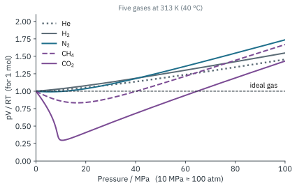
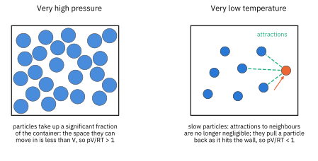
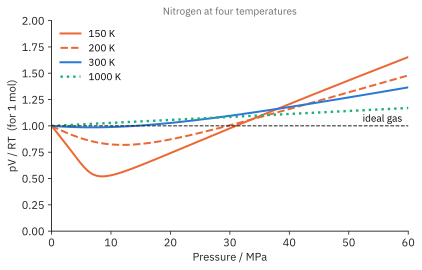
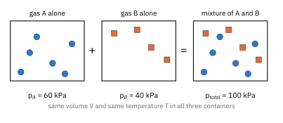
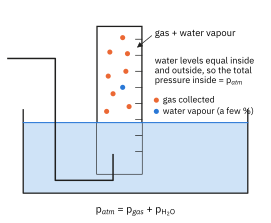
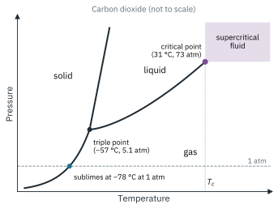
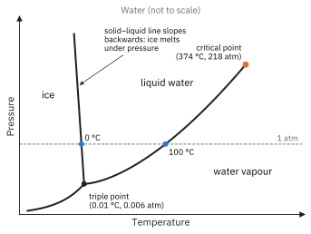

Topic 3 · The Gaseous State Part 2
The Gaseous State 2
On this page
Real gases
Throughout our discussion of ideal gases, we have implied that ideal behaviour is rare. It is most nearly reached at low pressure and high temperature, when the gas particles are furthest apart and moving most rapidly. For 1 mole of an ideal gas, pV = RT, so pV/RT should equal 1 at every pressure.1 For a real gas, as the pressure is increased, this ratio changes (Fig 1).

Deviations from ideal behaviour
The ideal gas model fails for two reasons. They come straight from the two kinetic theory assumptions that are not true for real particles:
- Gas particles do not have negligible volume. At very high pressure, the particles are pushed close together and their own volume becomes a significant fraction of the volume of the container. The space in which they are free to move is less than V, so the measured volume is larger than an ideal gas would need: pV/RT > 1.
- Gas particles do exert forces on each other: the intermolecular forces of Topic 2. At very low temperature, the particles move slowly and their kinetic energy is no longer large compared with these attractions. A particle about to hit the wall is pulled back by its neighbours, so it hits the wall less hard and the pressure is lower than an ideal gas would give: pV/RT < 1. Attractions also matter at moderate pressures, when the particles are close enough to feel each other.

The graphs in Fig 1 show both effects. As the pressure is increased from zero, intermolecular attractions (deviation 2) matter first: the particles are now close enough together to attract each other, and pV/RT falls below 1. As the pressure increases further, the volume of the particles themselves (deviation 1) becomes more significant as the particles are squeezed closer to one another, and pV/RT rises above 1. For H2 and He the attractions are so weak that only the particle-volume effect (deviation 1) shows at this temperature.
Effect of temperature

For a given gas (nitrogen in Fig 3), the deviation gets larger as the temperature gets lower. At low temperature the particles move more slowly, so the attractions have more effect and the dip below 1 is deeper. At high temperature (1000 K) the particles move so fast that the attractions hardly matter, and only the particle-volume effect is left. Below a certain temperature, the deviation from ideal behaviour becomes very severe, because the gas condenses into a liquid (see the Enrichment section below).
Which gases are most nearly ideal?
The weaker the intermolecular forces and the smaller the particles, the more nearly ideal a gas is. Helium and hydrogen are the most nearly ideal of all: their particles are small and have very few electrons, so the id-id interactions between them are very weak. Gases with strong intermolecular forces deviate most. Ammonia and water vapour form hydrogen bonds, and hydrogen chloride has pd-pd interactions, so they are far from ideal. Among non-polar gases, the more electrons a molecule has, the stronger its id-id interactions and the larger the deviation: CO2 (22 electrons) deviates more than N2 (14 electrons), as Fig 1 shows.
Partial pressure
In a mixture of gases that do not react, each gas behaves as if the others were not there: it fills the whole container and hits the walls with the same frequency as it would on its own. The pressure it would exert on its own, in the same volume at the same temperature, is its partial pressure.

For gases A, B, C, … we write
ptotal = pA + pB + pC + … (1)
where ptotal is the total pressure of the gas mixture and pA, pB, pC, … are the partial pressures of the individual gases.
All the gases in a mixture share the same volume V and the same temperature T. So, for each individual gas,
Combine (1) and (2):
So at constant temperature and volume, the total pressure of a gas sample is determined by the total number of moles of gas present, whether this represents a single substance or a mixture.
Dividing (2) by (3) for gas A:
xA is the mole fraction of gas A in the mixture. The ratio of the partial pressure to the total pressure is equal to the mole fraction of the component gas. Rearranging (4),
You will use partial pressures again in Topic 9, where the equilibrium constant Kp is written in terms of them.
Worked and explained examples
Example 1: partial pressures in air
Dry air is 78.1 % nitrogen, 20.9 % oxygen and 1.0 % argon by number of moles (ignoring CO2 and other trace gases). Calculate the partial pressure of each gas when the total pressure is 101 kPa. (Real composition, rounded.)
(Percentage by moles ÷ 100 = mole fraction. Then use pA = xAptotal.)
p(N2) = 0.781 × 101 = 78.9 kPa; p(O2) = 0.209 × 101 = 21.1 kPa; p(Ar) = 0.010 × 101 = 1.0 kPa
Check: 78.9 + 21.1 + 1.0 = 101.0 kPa. The partial pressures add up to the total, as Dalton's Law says.
Example 2: mixing two gases
A 3.00 dm3 flask containing hydrogen at 200 kPa is connected by a tap of negligible volume to a 2.00 dm3 flask containing nitrogen at 100 kPa. The tap is opened and the gases mix at constant temperature. Calculate the partial pressure of each gas and the total pressure. (Illustrative data.)
(Each gas now spreads into the total volume of 5.00 dm3. At constant T, p1V1 = p2V2 for each gas separately.)
p(H2) = 200 × 3.00 / 5.00 = 120 kPa; p(N2) = 100 × 2.00 / 5.00 = 40.0 kPa
ptotal = 120 + 40.0 = 160 kPa; x(H2) = 120/160 = 0.750
Example 3: gas collected over water
A gas collected over water is saturated with water vapour (Fig 5). When the water levels inside and outside the collecting vessel are equal, the total pressure inside equals atmospheric pressure, so
patm = pgas + pwater vapour

0.500 dm3 of oxygen is collected over water at 25 °C when the atmospheric pressure is 101.3 kPa. The vapour pressure of water at 25 °C is 3.2 kPa (a value like this is always given in a question). How many moles of oxygen were collected? (Real vapour pressure data.)
p(O2) = 101.3 − 3.2 = 98.1 kPa = 9.81 × 104 Pa; V = 5.00 × 10−4 m3; T = 298 K
n(O2) = pV / RT = (9.81 × 104 × 5.00 × 10−4) / (8.31 × 298) = 1.98 × 10−2 mol
Applications of the theory of gases
Liquefaction and fractional distillation of air
The air around us is a mixture of gases, mainly nitrogen and oxygen, but containing much smaller amounts of argon, water vapour and carbon dioxide, and very small amounts of other gases. Air is the commercial source of nitrogen, oxygen, argon and the other noble gases. It is separated into its components by fractional distillation of liquefied air.
Before air is liquefied, water vapour and carbon dioxide are removed, because these substances solidify when cooled and would clog the pipes of the air liquefaction plant. In the classic (Linde) process, the dry, CO2-free air is compressed to about 200 atm. This compression causes the air to become warm; it is cooled, and the cooled, compressed air is then allowed to expand rapidly through a valve. The expansion causes the air to become colder. The cold air is used to pre-cool the incoming compressed air, and by repeating the cycle the air eventually becomes cold enough for much of it to liquefy.
The liquefied air is then allowed to warm up slowly in a fractionating column, and the different components boil off at their respective boiling points: nitrogen (−196 °C) first, then argon (−186 °C), then oxygen (−183 °C).
The Joule-Thomson effect
The cooling of a real gas when it expands from high pressure to low pressure, without heat being supplied, is called the Joule-Thomson effect. As the gas expands, its particles move further apart. To do this they must do work against the intermolecular attractions between them. The energy for this comes from their own kinetic energy, so the average kinetic energy falls and the gas cools.
An ideal gas has no intermolecular forces, so it would not cool on expanding in this way. The Joule-Thomson effect is direct evidence that real gas particles attract each other.2
Critical temperature and pressure
A gas can be liquefied by increasing the pressure alone, but only below a certain temperature. Above this temperature, the particles move so fast that no pressure, however high, can make the attractions hold them together as a liquid. This is the critical temperature, Tc. The pressure needed to liquefy the gas at its critical temperature is the critical pressure.
This is shown on a phase diagram, which shows the conditions of temperature and pressure at which each phase is stable (Fig 6 and Fig 7). Each line shows the conditions at which two phases are in equilibrium.


At atmospheric pressure, 1 atm, CO2 has no liquid state: solid carbon dioxide (dry ice) sublimes directly into a gas at −78 °C. At 5.1 atm and −57 °C, the triple point of CO2 is reached: at exactly this pressure and temperature, solid, liquid and gas CO2 all exist together in equilibrium. Liquid CO2 can only exist above 5.1 atm; this is why a CO2 fire extinguisher is under pressure. Similarly, the triple point of H2O is at 0.006 atm and 0.01 °C.
The liquid-gas line ends at the critical point: 31 °C (7.38 MPa, 73 atm) for CO2 and 374 °C (22.1 MPa, 218 atm) for H2O. Beyond these temperatures the liquid-gas boundary ceases to exist, and carbon dioxide and water vapour will not condense by the application of pressure alone. Notice also that the solid-liquid line for water slopes backwards: ice is less dense than liquid water (Topic 2), so increasing the pressure lowers the melting point.
| Gas | Critical temperature / °C | Critical pressure / MPa | Liquefied by pressure alone at 25 °C? |
|---|---|---|---|
| Helium | −268 | 0.23 | No |
| Nitrogen | −147 | 3.4 | No |
| Oxygen | −119 | 5.0 | No |
| Carbon dioxide | 31 | 7.4 | Yes |
| Ammonia | 132 | 11.3 | Yes |
| Water | 374 | 22.1 | Yes |
(Literature values.) A gas with a critical temperature below room temperature, such as N2 or O2, cannot be liquefied just by compressing it at room temperature: it must be cooled first. That is why air has to be cooled by the Joule-Thomson effect before it will liquefy.
Supercritical carbon dioxide
As temperature and pressure are increased along the liquid-gas line, the liquid expands and the gas is compressed until the two have the same density. At the critical point, the distinction between them disappears and the two phases become identical. For carbon dioxide, this happens at a pressure of 7.38 MPa (73 atm) but a temperature of only 31 °C. Above this point, carbon dioxide is said to be a supercritical fluid (scCO2).
Supercritical fluids show properties of both liquids and gases. A supercritical fluid will fill any size of container, like a gas, and dissolve materials, like a liquid. Its power as a solvent can also be ‘tuned’ very easily by changing the pressure, which changes its density. Carbon dioxide has the advantage over other supercritical fluids that its critical temperature is remarkably low, only 31 °C, so high temperatures are not necessary. This means scCO2 can be used as a solvent with materials that would decompose at higher temperatures. It is also non-toxic, non-flammable and cheap.
Some uses of scCO2 include as a solvent for extraction, in chromatography (supercritical fluid chromatography, SFC) and in dry cleaning. CO2 can also be used as a refrigerant and as a blowing agent for foams.
Additional information
- For n moles, the ratio is pV/nRT. It is called the compressibility factor, Z. You only need to know that it is 1 for an ideal gas, and why a real gas gives a value above or below 1. ↩
- Beyond the syllabus: a few gases, such as hydrogen and helium, warm up when they expand at room temperature. Their attractions are so weak that the repulsions between particles in collisions dominate. They only cool on expansion below a certain ‘inversion temperature’ (about −70 °C for hydrogen), so they must be pre-cooled before they can be liquefied this way. ↩